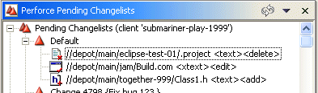
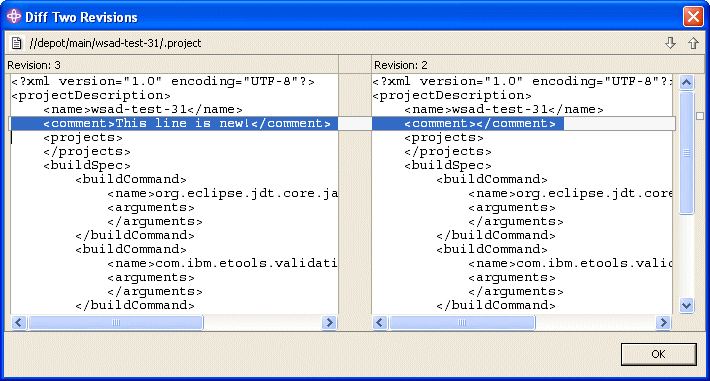

Displaying File Status and History
You can display the following types of information about files:
- File status: the current state of the file as managed by Perforce,
indicated by label decorations
- File properties: location, number of revisions, and so on. Displayed
on the Perforce Properties dialog.
- Revision history: the changes that have been checked into the depot,
including a description of the change, date, user, and so on.
- Submitted changelists: previously-submitted changelists, including
a list of files submitted.
You can also search the contents of files under Perforce control using a grep-style search.
File Status
To view the status of open files, examine the file icons in the P4 Pending
Changelist view. The label decorations displayed on the icons indicate
the status of the file. For example, the following figure shows files open for
delete (red x), edit (red check mark), and add (red +).

File Properties
To display file properties:
- Right-click the file in the Navigator view and choose Properties.
- Click Perforce. File properties are displayed as shown in the following
figure.

Note that the head revision is the revision most recently checked in,
and the have revision is the one last synced to your workspace.
Revision History
To display the revision history of a file, right-click the file and choose
Revision History.
The History view lists the following details about the revisions
of a file that have been submitted to the Perforce depot:
- Revision: the revision number of the file. Every time you (successfully)
submit the file, its revision number is incremented.
- Changelist: the changelist number associated with the file revision
when it was submitted to the depot. This number is assigned by Perforce, and
is used to group related files when submitting them. For example, if you change
several files in the process of fixing a bug or adding a feature, the changelist
number identifies the point at which the change was submitted. You can use
the changelist number to sync the files to your workspace as a group.
- Date: the date the changelist was submitted.
- User: the Perforce user name of the user who submitted the changelist
- Action: the action perforce on the file, for example, add, edit,
or delete.
- Description: details about the changelist, entered by the user who
submitted the changelist.
To compare two revisions to see what changes have been made, select the desired
revisions, then right-click and choose Diff Two Revisions. The Diff
Two Revisions dialog is displayed, highlighting the differences between
the files, as shown in the following figure.

Submitted Changelists
To display a list of previously-submitted changelists, click the P4 Submit tab. To display details for a submitted changelist, click the desired changelist. Details are displayed in the pane below the list.
Searching File Content
To search the contents of files in a Perforce depot:
- Click the toolbar Search button. The Search dialog is displayed.
- Click the P4 Grep tab.
- Specify the text you are seeking, the files to be searched, and any search options.
- Click Search. Results are displayed in a Search results tab.
- To display the contents of file that contains the search text, double-click it in the Search pane. To locate an instance of the search text in the file, expand the results for the file and double-click the line that displays details about the instance.
You can also search file text from the P4 Submit view.